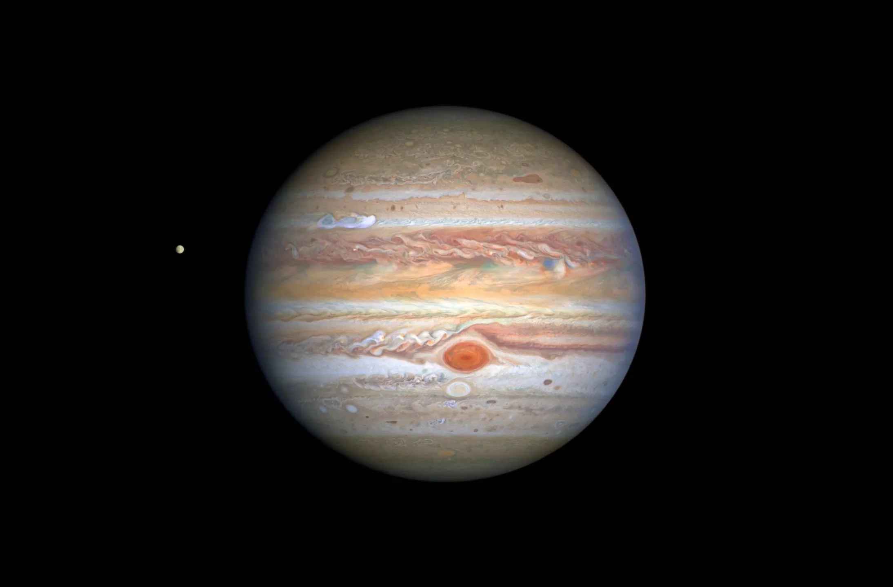

Mercúrio
Mercúrio é o menor[nota 1][nota 2] e mais interno planeta do Sistema Solar, orbitando o Sol a cada 87,969 dias terrestres. A sua órbita tem a maior excentricidade e o seu eixo apresenta a menor inclinação em relação ao plano da órbita dentre todos os planetas do Sistema Solar. Mercúrio completa três rotações em torno de seu eixo a cada duas órbitas. O periélio da órbita de Mercúrio apresenta uma precessão de 5 600 segundos de arco por século, um fenômeno completamente explicado apenas a partir do século XX pela Teoria da Relatividade Geral formulada por Albert Einstein.[2] A sua aparência é brilhante quando observado da Terra, tendo uma magnitude aparente que varia de −2,6 a 5,7, embora não seja facilmente observado pois sua separação angular do Sol é de apenas 28,3º. Uma vez que Mercúrio normalmente se perde no intenso brilho solar, exceto em eclipses solares, só pode ser observado a olho nu durante o crepúsculo matutino ou vespertino.

Vênus
Vénus (português europeu) ou Vênus (português brasileiro) (AO 1990: Vénus ou Vênus)[1] é o segundo planeta do Sistema Solar em ordem de distância a partir do Sol, orbitando-o a cada 224,7 dias. Recebeu seu nome em homenagem à deusa romana do amor e da beleza Vénus, equivalente a Afrodite. Depois da Lua, é o objeto mais brilhante do céu noturno, atingindo uma magnitude aparente de -4,6, o suficiente para produzir sombras. A distância média da Terra a Vênus é de 0,28 AU, sendo esta a menor distância entre qualquer par de planetas.[2] Como Vénus se encontra mais próximo do Sol do que a Terra, ele pode ser visto aproximadamente na mesma direção do Sol (sua maior elongação é de 47,8°). Vénus atinge seu brilho máximo algumas horas antes da alvorada ou depois do ocaso, sendo por isso conhecido como a estrela da manhã (Estrela d'Alva) ou estrela da tarde (Vésper); também é chamado Estrela do Pastor.

Terra
A Terra é o terceiro planeta mais próximo do Sol, o mais denso e o quinto maior dos oito planetas do Sistema Solar. É também o maior dos quatro planetas telúricos. É por vezes designada como Mundo ou Planeta Azul. Lar de milhões de espécies de seres vivos,[13] incluindo os humanos, a Terra é o único corpo celeste onde é conhecida a existência de vida. O planeta formou-se há 4,56 bilhões de anos,[14][15][16][17] e a vida surgiu na sua superfície um bilhão de anos depois. Desde então, a biosfera terrestre alterou significativamente a atmosfera e outros fatores abióticos do planeta, permitindo a proliferação de organismos aeróbicos, bem como a formação de uma camada de ozônio, a qual, em conjunto com o campo magnético terrestre, bloqueia radiação solar prejudicial, permitindo a vida no planeta.[18] As propriedades físicas do planeta, bem como sua história geológica e órbita, permitiram que a vida persistisse durante este período. Acredita-se que a Terra poderá suportar vida durante pelo menos outros 500 milhões de anos.

Marte
Marte é o quarto planeta a partir do Sol, o segundo menor do Sistema Solar. Batizado em homenagem ao deus romano da guerra, muitas vezes é descrito como o "Planeta Vermelho", porque o óxido de ferro predominante em sua superfície lhe dá uma aparência avermelhada.[1]
Marte é um planeta rochoso com uma atmosfera fina, com características de superfície que lembram tanto as crateras de impacto da Lua quanto vulcões, vales, desertos e calotas polares da Terra. O período de rotação e os ciclos sazonais de Marte são também semelhantes aos da Terra, assim como é a inclinação que produz as suas estações do ano. Marte é o lar do Monte Olimpo, a segunda montanha mais alta conhecida no Sistema Solar (a mais alta em um planeta), e do Valles Marineris, um desfiladeiro gigantesco. A suave Bacia Polar Norte, no hemisfério norte marciano, cobre cerca de 40% do planeta e pode ser uma enorme marca de impacto.[2][3] Marte tem duas luas conhecidas, Fobos e Deimos, que são pequenas e de forma irregular. Estas luas podem ser asteroides capturados,[4][5] semelhante ao 5261 Eureka, um asteroide troiano marciano.
Júpiter
úpiter é o maior planeta do Sistema Solar, tanto em diâmetro quanto em massa, e é o quinto mais próximo do Sol. Possui menos de um milésimo da massa solar, contudo tem 2,5 vezes a massa de todos os outros planetas em conjunto. É um planeta gasoso, junto com Saturno, Urano e Netuno. Estes quatro planetas são por vezes chamados de planetas jupiterianos ou planetas jovianos, e são os quatro gigantes gasosos, isto é, que não são compostos primariamente de matéria sólida.
Júpiter é composto principalmente de hidrogênio, sendo um quarto de sua massa composta de hélio, embora o hélio corresponda a apenas um décimo do número total de moléculas.

Saturno
Saturno é o sexto planeta a partir do Sol e o segundo maior do Sistema Solar atrás de Júpiter. Pertencente ao grupo dos gigantes gasosos, possui cerca de 95 massas terrestres e orbita a uma distância média de 9,5 unidades astronômicas.
Possui um pequeno núcleo rochoso, circundado por uma espessa camada de hidrogênio metálico e hélio. A sua atmosfera, também composta principalmente de hidrogênio, apresenta faixas com fortes ventos, cuja energia provém tanto do calor recebido do Sol quanto da energia irradiada de seu centro. Entretanto, estas bandas possuem aspecto pouco proeminente, com coloração que varia do marrom ao amarelado, devido à espessa névoa que envolve o planeta, além das camadas de nuvens. Sazonalmente surgem grandes sistemas de tempestades, além de vórtices permanentes existentes nos polos.

Urano
Urano[11] (Úrano em Portugal[12]) é o sétimo planeta a partir do Sol, o terceiro maior e o quarto mais massivo dos oito planetas do Sistema Solar. Foi nomeado em homenagem ao deus grego do céu, Urano, o pai de Cronos (Saturno) e o avô de Zeus (Júpiter). Embora seja visível a olho nu em boas condições de visualização, não foi reconhecido pelos astrônomos antigos como um planeta devido a seu pequeno brilho e lenta órbita.[13] William Herschel anunciou sua descoberta em 13 de março de 1781, expandindo as fronteiras do Sistema Solar pela primeira vez na história moderna. Urano foi também o primeiro planeta a ser descoberto por meio de um telescópio.
Urano tem uma composição similar à de Netuno, e ambos possuem uma composição química diferente da dos maiores gigantes gasosos, Júpiter e Saturno. Como tal, os astrônomos algumas vezes os colocam em uma categoria separada, os "gigantes gelados". A atmosfera de Urano, embora similar às de Júpiter e Saturno em sua composição primária de hidrogênio e hélio, contém mais "gelos" tais como água, amônia e metano, assim como traços de hidrocarbonetos. É a mais fria atmosfera planetária no Sistema Solar, com uma temperatura mínima de 49 K (–224 °C). Tem uma complexa estrutura de nuvens em camadas, e acredita-se que a água forma as nuvens mais baixas, e o metano as mais exteriores.

Netuno
Netuno (pt-BR) ou Neptuno (pt) (AO 1990: Netuno ou Neptuno)[2][3] é o oitavo planeta do Sistema Solar, o último a partir do Sol desde a reclassificação de Plutão para a categoria de planeta anão, em 2006. Pertencente ao grupo dos gigantes gasosos, possui um tamanho ligeiramente menor que o de Urano, mas maior massa, equivalente a 17 massas terrestres. Netuno orbita o Sol a uma distância média de 30,1 unidades astronômicas.
O planeta é formado por um pequeno núcleo rochoso ao redor do qual encontra-se uma camada formada possivelmente por água, amônia e metano sobre a qual situa-se sua turbulenta atmosfera, constituída predominantemente de hidrogênio e hélio. De fato, notáveis eventos climáticos ocorrem em Netuno, inclusive a formação de diversas camadas de nuvens, tempestades ciclônicas visíveis, como a já extinta Grande Mancha Escura, além dos ventos mais rápidos do Sistema Solar, que atingem mais de 2 000 km/h. A radiação solar recebida por Netuno não seria suficiente para fornecer tamanha energia à turbulenta atmosfera, pelo que descobriu-se que o calor irradiado do centro do planeta possui um papel importante na manutenção destes eventos meteorológicos extremos. A pequena quantidade de metano nas camadas altas da atmosfera é, em parte, responsável pela coloração azul do planeta.